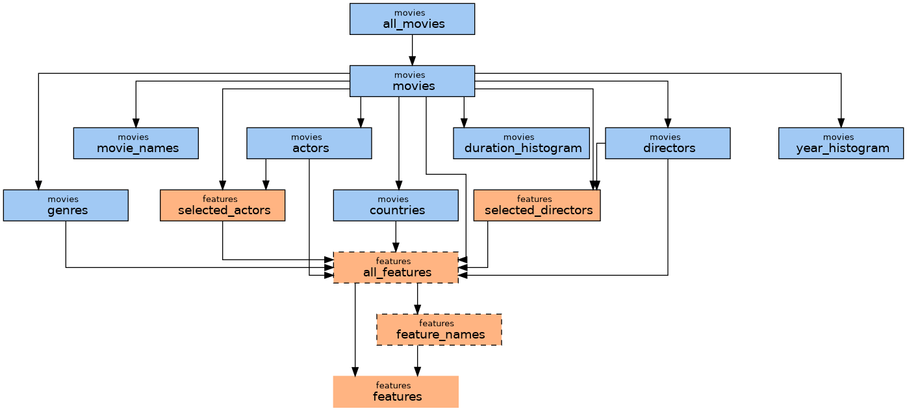

Chains
Chain si where tasks are instantiated, configured, connected together and allow to compute and access data.
Key feature of chain is that data of tasks are saved, i.e. each task is computed only once. Moreover, location of saved data is based only on inputs to computation (input tasks and parameters) and therefore data are shared also between chains. In this way, the exactly same computation is never executed twice.
Chain creation
Chain is always created from a config which contains all necessary information:
- list of tasks
- parameter values
- dependencies on other configs
- dir, where data are saved to
Instantiation of a chain is simple as calling config.chain() or Chain(config).
Whole code to create chain object typically looks like this
Chain creation
from taskchain import Config
from project import project_config
chain = Config(
project_config.TASKS_DIR,
project_config.CONFIGS_DIR / 'config.yaml',
global_vars=project_config
).chain()
from pathlib import Path
REPO_DIR = Path(__file__).resolve().parent.parent.parent
DATA_DIR = Path('/path/to/project_data/source_data')
TASKS_DIR = Path('/path/to/project_data/task_data')
CONFIGS_DIR = REPO_DIR / 'configs'
Accessing tasks
Tasks are accessible from a chain by their name ether as attribute chain.task_name or
as dict key chain['task_name'].
If there are more tasks of the same name, you can use its full name with
group or namespace or both chain['namespace::group:task_name'].
List of tasks
chain.tasks contains dict of all tasks. Keys are full names and value are task objects.
For better overview of all tasks in chain there is chain.tasks_df which contains
pandas DataFrame with basic information about each task:
- Index is full name of the task
namegroupnamespacecomputed-Truewhen task is computed and output data are saveddata_path- path to data, if data are not computed yet, location is emptyparameters- list of names of input parametersinput_tasks- list of full names of input tasksconfig- file name of config which declared this task
Draw tasks and dependencies
For more visual overview there is
chain.draw()

Nodes are tasks, edges dependencies.
- color is based on tasks' group
- border
- none - is not persisting data (
InMemoryData) - dashed - data not computed
- solid - data computed
- none - is not persisting data (
Tip
You can pass name of group or list of groups as argument to show only selected tasks. Note, that also neighbours are shown to give context for selected group.
Note
There are additional python dependencies: graphviz and seaborn.
pip install graphviz seaborn
Run tasks and data access
Task object have attribute value.
So, when task.value is requested one of three thinks happens
- data are not available yet -
runmethod of the task is called and data are saved - data are already computed and saved on disk - data are loaded to memory
- data are already in memory - just return the value
Accessing data
requested_data = chain.tasks_name.value
requested_data = chain['group:task_name'].value
Note
Calling run method of a task trigger .value on its input tasks
(as long as, you use input_tasks as argument of run method
or call .value manually in run method).
This process is rucrsive, thus single call of .value can trigger
loading or computation of many tasks.
You can also access Data object which handle saving and loading data
to and from disk by task.data
Recomputing data
Sometimes some persisted data become invalid, e.g. due to change in tasks' logic.
Both Chain and Task have force method which forces tasks to recompute their data
instead of loading from disk.
If you need recompute only one task, you can simply call
(note that force return task itself, so you can use it in chain with other commands):
chain.my_tasks.force().value
If data of a task turn out to be faulty, we usually want force recomputation also all dependant tasks in chain.
chain.force('my_task')
Method takes name of a task or list of names of tasks which should be forced.
These and all dependant tasks are marked as forced and will be recomputed when their value is requested.
Note, that this "forced" status is lost when chain is recreated.
If you want to be sure, that all data are recomputed,
use recompute=True argument which recompute all forced tasks
or delete_data=True which delete data of all forced tasks right away.
Warning
Be careful with forcing.
If you not handle recomputation correctly, your chain can end in incosistent state.
Using delete_data=True solves this problem
but can lead to deletion of "expensive" data.
Saved files
TaskChain is design to handle saving and loading data itself and to minimize accessing files directly. Here is general location of data computed by a task
/path/to/tasks_data/group_name/task_name/{hash}.{extension}
/path/to/tasks_datais path given in creation of config.group_name/- data are organized according to tasks groups (usually this is same as pipelines). If task is in multiple level groupgroup:subgrouppath isgroup/subgroup/.task_name/ale data generated by this task are in this directory.{hash}.{extension}is final file (or in some cases directory, e.g.DirData).extensionis determined by tasks return type, see more herehashis computed based on hashes of all input tasks and all parameter values. I.e. it is unique and determined fully by all inputs going to computation of these data.
Log files
Along the file with computed value, there is {hash}.run_info.yaml with run info
and {hash}.log with task's log output. See more here.
Human readable files
Persisted data are nicely structured in directories based on tasks' names and groups,
but names of files are unreadable hashes.
Data are mostly access through TaskChain, but sometimes it is useful accessed data directly, e.g. copy out final output.
To simplify direct access, chain offers method create_readable_filenames
which creates human-readable symlinks for all tasks in chain. e.g.:
/path/to/tasks/group_name/task_name/nice_name.pd -> /path/to/tasks/group_name/task_name/a4c5d45a6....pd
nice_name is name of task's config by default.
Advanced topics
MultiChains
MultiChain is only envelope over multiple chains.
Advantage over list or dict of Chain objects is that
MultiChain create chains in such way, that they share identical tasks (with same inputs).
TaskChain guarantee that identical tasks share data on disk but in this way
there is only one instance of the task, i.e. data are shared also in memory.
You can create multi-chain by passing list of configs. Individual chains can be accessed by config name (usually filename without extension):
from taskchain import Config, MultiChain, Chain
config1 = Config('/path/to/tasks_data', '/path/to/configs/config1.yaml')
config2 = Config('/path/to/tasks_data', '/path/to/configs/config2.yaml')
chains = MultiChain([config1, config2, ...])
chain1 = chains.config1
chain2 = chains['config2']
chain_dict: dict[str, Chain] = chains.chains
You can also create multi-chain from all configs in a dir
from taskchain import MultiChain
chains = MultiChain.from_dir(
'/path/to/tasks_data',
'/path/to/configs',
# other kwargs passed to configs such as `global_vars`
)
Note
You can use multi-chain also with contexts, e.g. one config with different contexts.
However, you have to handle names of configs manually (add extra argument name to your configs)
to avoid name colision in multi-chain.
Disabling parameter mode
As described above, location of saved files is based only parameters and input tasks (which are also determined by parameters). This is called parameter mode.
You can disable this mode by config.chain(parameter_mode=False)
this replaces hashes in filenames by config names.
This approach is little more comprehensible, but has some disadvantages:
- some computations can be done more time, because same task with same parameters can be defined in many configs
- you must be careful with names of your configs, e.g. you cannot rename your configs
- using contexts can and probably would break persistence
Migration to parameter mode
You can migrate to parameter mode later using
taskchain.utils.task.migration.migrate_to_parameter_mode.